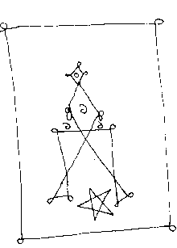

from the Lincoln Order Of Neuromancers
L.O.O.N.
compiled by SKaRaB, SNaKe, Sister Apple & Bro. Moebius B
This is a chain book. On receipt, please copy and pass on to anyone.
No curse is invoked if you do not choose to. Either way we win.
All rites reversed - 1986
Contents:
Reaching gnosis can result, for the religiously-oriented, in 'mystical experiences' - visitations by Gods, Demons, or the revealing of Divine Truths. For the magician however, the contents of such an experience are less interesting than what can be done with it - it is during moments of gnosis that sigils may be hurled; that the magician can reach through layers of space-time to manifest her will, and Gods can possess their devotees. Historically, many of the techniques of gnosis have been augmented by the use of drugs - from witches' flying ointments to the LSD & sensory deprivation experiments of John Lilly.
Any system or tradition is incomplete whilst it remains a theoretical curiosity. Study alone is of little value, unless it is complemented by practical messing about. Whole volumes might be written 'explaining' the magical natures of the various entities such as Goddesses, Demons, or Spirits, but these are no substitute for the experienced 'reality' of a deity during the course of a ritual. Although there is much talk of 'magical secrets', the only 'true' secrets are those which can be personally discovered through the light of direct magical experience.
Altered states of Consciousness may be achieved using a combination of internal changes (the use of the methods of gnosis), and interactions with others, as in hypnosis, group ritual, or orgia.
Everything we know boils down to supposition in the end, so reverse all statements, or put "nots" into assertions, and leap before you look. Wake up one day and attempt to banish your everyday reality - everything becomes new, unfamiliar and totally baffling. Objects become intense and frightening.
Be Wrong. We spend a lot of time striving for 'Right' answers, right beliefs, doing it right. Doing it right = confidence = success. Bo-ring! Be Wrong!
Gods and Gurus. Possession by a God or Spirit allows you to do things you would not ordinarily do. A guru gives proof that you can walk a tightrope without falling off, that you can play in the deep end of the swimming pool without drowning. Insanity seems to be an occupational hazard of magicians. Better be mad now and save time later. Harpo Marx was the greatest Hollywood shaman. Could you blow up a rubber glove and then milk it?
Sanity is 'out there' rather than in your head, since most people seem to see themselves as crazier than everyone else. If we voice too many mad thoughts, we get locked up. I recall a woman in the local asylum who thought she was a bird in a cage - she'd learnt to keep quiet about this as telling people only got her extra medication and ECT. Being safe is being sane - not expressing your mad thoughts. Magick can be about letting your mad thoughts out to stalk the streets in gangs.
Magick is a street thing. Magicians must be seen and heard. Crowley's trickster persona exemplified this, following in the zig-zag path of Cagliostro, Simon Magus and innumerable Shamans and Witches world-wide. A good magician plays to his audience, be it a tribal shaman doing Ifa or a street-corner sorceror making anti-cop talismans out of tin can lids. Learn to juggle, dance, play Irish Stand-down; these are the true siddhis. If you're really going to become a jumped-up little megalomaniac you might as well get a few laughs while you're about it. Pass the Top Hat.
The twentieth-century is busy resurrecting the titans - the primal "builders" of the cosmos who appear in creation myths under various guises - the Giants of Norse mythology or the Greek titans for instance. Once these titanic forces have completed their work, they are cast out or banished from the ordered cosmos, which is then populated with all manner of entities. The titans are ever-present, lurking at the borders of "reality". These forces, both destructive and creative, continually appear in literature as the theme of conflict between reason and raw, primal nature. The "High Priest" of such mysteries is the author H.P. Lovecraft, whose "Great Old Ones" seem to hold a continuing fascination for occultists, along with various other pantheons of Dark Gods, Dead Gods, Deep-fried Gods...
The myth-cycle of the titans represents the catabolic forces which propagate change in any system - whether the scale be universal or subatomic. They are held to be dormant or asleep in that they are in equilibrium. However, when a system evolves to a certain degree of complexity it becomes increasingly unstable, which can eventually lead to either evolution - the system "evolves" to a higher-order of complexity, or collapse - systems crash. It is at such crisis-points that the titans once more become active - when a great deal of instability needs to be built up, so that the evolutionary "leap" may be made.
The development of nuclear technology has led to a sudden increase of access points where the spheres meet between our ordered reality and the primal chaos of the titans. The gateways have been opened, and the evolution of all entities within the biosphere (both organic and elemental) is being affected.
As the power of the titans returns, a new priesthood has arisen to worship them - the power obsessed politicos and their numerous satraps. Like the inbred wizards of the Cthulhu Mythos, they believe that the titans can be controlled, and that they possess the spells to bind and chain the nuclear forces without danger. Unfortunately for them (and us), the titans are utterly amoral, not being sentient as we know it. Our only point of interface with them is through the so-called Dragon Brain, with its pre-verbal atavisms and instinctual drives.
Titan-Gnosis is the name we have given to the evolution in consciousness that the titans are generating in Human beings as their stirrings ripple through our mind. The awareness grows that Human survival surpasses all boundaries - both ideological and cultural; that it is necessary to live within nature rather than laying waste to the environment. It seems that as the titans stir in death's dream, the closer we are to "awakening" in larger and larger numbers.
The tricky point about the titans is that for the moment, we need them if the evolutionary leap is to be made successfully. Their return is generated the incoming current which has been variously conceptualised as the 93, Ma'at, or KAOS current. In the final analysis, the names and attendant symbolism are not that important - they are but facets of the same process.
Magicians and other visionaries who are aware of Titan-Gnosis and its effects are now actively working as transducers for these energies. Evocation of titanic energies into one's own space-time lattice is a dangerous enterprise, yet there are those who may seemingly do this with impunity. The use of names, sigils, and chants are only partially helpful, since the 'names' of the titans form the fabric of our reality itself.
NB: This essay was writ following a series of workings coincident to events preceding and following the Chernyobl disaster.
To work with one's ego is to begin an inner alchemy, the aim of which is not to 'destroy' or 'transcend' it, but to move from a state of fixation (ego-centric) to a condition of mutability (Exo-centric), which is capable of constant revision and change. This is what is meant by the phrase 'letting go', and of dissolving the idea of mind as separate to the world. The Ego remains as a point of 'I-ness' which gives meaning to experience, yet the contents of the psyche become much more fluid.
In one sense, it is the ego which roots us in space-time - the psychic equivalent of having a sense of place, of occupying a particular set of co-ordinates. The majority of our experience of reality is at the level of objects, bodies and events that appear to be temporally separate. We experience ourselves as centres of will, perception, and ego.
In contrast to the ego, the will displays a vector quality, in that it has both direction and magnitude. The will is the wave to the ego's particle. Although we like to think of ourselves as centres of intentionality, much of our behaviour is a result of vector resonance - waves rippling through, appearing in our space-time universe as separate events and synchronous experiences. A key to the appropriate magical stance is given by Crowley in his novel, Moonchild:
"...the clever man, so-called, the man of talent, shuts out his genius by setting up his conscious will as a positive entity. The true man of genius deliberately subordinates himself, reduces himself to a negative and allows his genius to play through him as it will..."
The Thelemic concept of the realisation of the True Will necessitates an unfolding of awareness of the will as a vector quality. Will imposes organisation - order out of "the chaos of the normal" (Austin Osman Spare), and the realisation of True Will involves an 'obedience to awareness' of the evolutionary patterns which govern human development. Will is an emergent property of our interaction with the total environment - it cannot be isolated to any one element. Will, perception and consciousness - we are immersed in them the way a fish is immersed in water. They are emergent properties of the total biosphere of Gaia.
So much for theory. How is this alchemy accomplished? The key word is integration - dissolving the mind-body, spirit-matter fragmentation. Enter into a 'being-in-the-now' dance, immersed in the body of Gaia, within the universe. Will on any level is the organising principle - kundalini-shakti coiled creates all forms. Therefore:
During gnosis or times of great emotional feeling, the sigil may be drawn, visualised or fiercely concentrated upon, to the exclusion of all else. This enables the so-called subconscious mind to 'reprogram' reality in accordance with will. Once the sigil is cast, it is forgotten, so that the desire's realization is not hindered by 'lust of result.'
The word, spoken or written, forms the majority of sigils. It is also worth experimenting with the keying of desires to specific smells, tastes or sounds. Sigils can bring about a wide range of results, from the most abstract to the 'mundane'. From altering dream-content, to habit and behaviour reformation, and arranging fortuitous co-incidences.
Sigils may be formed in this manner independently of any system of planetary or other symbols, and can be hurled forth without elaborate ritual. As a method of practical magick, it is simple and elegant; its effectiveness can be discovered through personal experiment.
See:
As part of an initiation, a candidate may be expected to defend a spot or object, despite all the combined efforts of the group to flaunt her. Long-range magical attack may employ telepathic destructive impulses, projection of thought-forms or sympathetic (unsympathetic?) magick.
Magical Combat should be differentiated from psychic attack, with which a large proportion of 'fringe' occultists concern themselves with, and is largely a product of self-delusion and varying degrees of megalomania. True magical combat has its own rules and boundaries, which are known to the skilled, while the trainee must quickly learn them if trauma is to be avoided. Caught up in a situation which s/he finds incomprehensible and alien, the trainee only knows confusion and terror. Stripped of the smug self-assurance of "it can't happen to me" s/he learns to perceive the environment with clarity, to give attention to the rhythms and pulses of the world. Truly, Death is a great teacher. If you can reach forwards and see the moment of your 'death', then that moment will give you a glimpse of your potential.
In this, the magician is less of a warrior and more of a thief (granted, 'Chaos Thief' isn't as attractive a label as 'Chaos Warrior'). Prometheus is the appropriate mythic image - the stealer of fire. No-one can fight Death and win, but s/he can be outwitted. The magician is one who capers and antics, the wise fool. No-one takes a fool seriously. Become a fool and lay a false trail. Drop the po-faced mask of 'initiate' and take your partners for the masque!
The progress of western magicians does not seem as terrible as
the travails of magicians in other cultures. Since so much 'knowledge'
can be bought, the idea of striving against trials for power seems
foreign. This is not just a glamour; life-threatening or mentally-traumatic
situations can open the floodgates of magical ability in a way
that no weekend workshop or correspondence course ever can. Living
on the Edge is an appropriate phrase, as there is no room
for half-measures. A magical combat, if properly arranged, will
force you to relearn what you need to be able to do in order to
survive. If a Magus is going to pass her power to another, she
must be sure that the candidate has the qualities (i.e. a survival
instinct and staying power) necessary to accept the responsibility
(karma?) that attends the position. The aim of such combat is
constructive, but if the candidate fails - so must it be.
The increasing use of computer metaphors within L.O.O.N. cells has influenced our style of ritual. We have abandoned the traditional form, with its quasi-religious format and monkish robes. The current trend is white boiler suits, black pumps and gloves, and wraparound shades. This, together with robot-bopping and electronic shriekback gives us a distinctive style. Granted, it does look a little out of place at Glastonbury. Dances can reflect the spiral energies of the universe, manifesting in the DNA and other forms. The formation of a Gestalt group mind allows a group to work ritual whilst temporally or spatially separated, if need be.
Ritual creates Order out of Chaos, a sphere wherein everything (even our mistakes) is an expression of will. When invoking the Chaos Current one is identifying with the unfolding aeonic shift, so that one literally becomes the current, as a physical locus.
Armed with this awareness, a seasonal rite can become a powerful focus of change, as the seasonal pulses are directed both inwardly (personal change) and outwardly (environmental change). Traditionally, these festivals are cross-over points between the worlds - and awareness of the internal/external dimensions seems to have been largely forgotten by westerners, shielded as we are from the elements by our centrally-heated boxes.
The scale at which a ritual act manifests is dependent on the will of its participants - anything from scrying the ripples and eddies of Chaos to warping the very fabric of space-time. The format of the working is that which the participants perceive to be appropriate to the intent - invokation may be verbal or structured from an arrangement of bells and gongs of different tone. A sequence of dances may be arranged to reflect the transformation of force into form, or the energisation of astral machines or circuits. A ritual, begun physically, may be re-enacted or continued in dream.
We have found that generally, it is simply structured rituals which have the most effective result. Will is the feather-touch which can move mountains.
As with anything else, someone else's ritual will only be effective
for you up to a point - look at other peoples' rites as
learning devices. Ritual for its own sake is rarely effective,
but when powered by will/intent, is highly so. However the condition
of mind that must be mastered is to stop thinking about whether
or not the rite will be effective. Lust of result must be replaced
by a cellular certainty that once the arrow of desire has been
loosed, it will strike its target. By all means discuss experiences,
technique, and how it can be done better next time, but let the
intention/desire vanish from conscious concern.
Enough has been written of the 'traditional' weapons of magick, so we will not add to the verbiage. In general, a magical weapon is a focus for will and perception - a vehicle for astral/etheric energy (whatever that is). Physical form is a secondary consideration. A weapon is any instrument which is imbued with power. Some 'shamanic' instruments - dolls, masks, rattles, drums etc., have their own history, personality and charisma - they are quite likely to 'bite' the unwary, and are considered by their owners to be sentient. The relationship between such a weapon and its owner is similar to that between a human and a cat - a true weapon of power owns itself and is quite likely to decide when it should be passed on.
Perhaps the foremost weapon is the body. In Magical Combat, projection of the bioaura can disrupt the field of another person, the 'push' resulting in psycho-physical trauma. Eastern yogis are reputed to be able to cause death by application of mantrayoga. The way we experience our bodies tends to reflect our world-experience - see the body as a machine and it is liable to break down. We L.O.O.N.'s prefer to view the body as a biosystem, a microcosm of the biosphere, itself a microcosm of the Universe. Thus the body becomes a weapon for understanding the greater systems in which it is enmeshed.
Rather than holding that weapons A, B, C, D as necessary before one can begin to practice magick, we set out upon our paths and let the weapons declare themselves to us. As Don Juan says, there is no such thing as 'an accident' to a 'man of knowledge' - everything is out there, waiting to happen. Thus, rather than seeking a weapon out, or popping around to the nearest occult supermarket and buying one, we attract the necessary instruments to us by our works - it may manifest by being 'found', given as a gift, or appear as an inspired 'entity' from some other dimension.
An example of this latter approach is a horned staff owned by SKaRaB, who was inspired to draw during a moment of vacuity (watching TV) and hours later, sought it on the astral:
"...retired about 1.45am. Proceeded to visualise the image of the staff in an Egyptian temple. Found the staff stuck in a recess in the floor so that it stood upright. Grasped the staff with my right hand and a burst of very strong energy flooded through me, starting at the base of my spine - breath-taking but not violent. Vibrated the god-names of the staff [received earlier]: Ra, Isis, Ma'at, Hathor, Sekhmet - with each vibration, the ripples increased. Changing (physical) posture did not interrupt this. Let go of the staff and assumed astral form of Osiris slain. Felt calm, clear, but tired. Grasped the staff again and felt physical vibrations run along my right arm. Invoked Hathor and mentally said "Enough - I can't take any more." The energy flow ceased abruptly. 'Left' the astral form of the staff in the temple. Closed at 5.35am."
SKaRaB notes that the subsequent assembly of the physical staff
was a transformation in itself, though the aetheric form and personality
had been to a large extent, already established. When watching
SkaRaB and the staff in action, it is sometimes hard to decide
who is wielding who. The weapon has knowledge and its own attendant
familiars, and may yet abandon SKaRaB if it finds someone else
who can effect its purpose with greater precision.
Thus the aim of any psychotechnology is to unlock the powers of the human brain. We believe that the evolutionary adaptation of humanity is an ongoing development of consciousness, and the place where all vectors meet in consciousness is expressed, in physical form, as the individual biosystem.
Of all the techniques of neuromancy, recourse to Chemognosis (drugs)
is the most widespread across cultures, and in the western hemisphere
particularly, one that arouses much controversy. Only those who
have received medical training, and can hence say from a position
of authority that they do not know how the brain works, are allowed
to tamper with it - through ECT, surgery and the good old 'chemical
cosh.' While it is fine for these watchdogs to impose their will
upon the brains of others, it is quite another matter for non-qualified
people to try it on themselves.
Write Your Chaos Magick Tome!
Why buy books on Chaos Magick when you can write your own! It's simple, all you need is a load of paper, pens, glue, and the mind-altering substance of your choice. Go to the library and choose books at random, collect a pile of magazines from wherever you can get them free. Record bits of other people's conversations. Get all your bits together and place on the floor in a big pile. Ingest the sacrament, throw the pile about and start cutting things (not the library books!) into clippings. When you enter gnosis (or just get bored) sweep the lot into a big cardboard box. Don't forget to insert the word 'chaos' into the text every 2 or three phrases. And next week we'll be showing you how to make a cover to keep it all in... cue theme music... credits...
This is usually the stage in every Chaos Magick tome where the authors start running out of verbal diarrhoea/insults and start padding things out with examples of rituals, spells, 'new' systems of divination or equations. So without further ado we present the L.O.O.N. banishing ritual:
"FUCK OFF YOU BASTARDS!"
What about the so-called 'underground' of occult 'zines? They tend to be the product of individuals, orders or groups, and provide an essential network for passing information along - or of injecting a healthy dose of Disinformation. We tend to judge an occult group on the basis of the information circulating about them. Such judgements are at best tenuous. Over the last few years, we've seen the "Chaoists vs Traditionalists" debate, the 'Bitchcraft' of Wicca, and the numerous OTO factions all jostling for position. Although there is much discussion of the 'Chaos Current', the most powerful current is that of electric cash registers ringing up another sale... ching! Chaos Magick is already dead, and the only living debate is between the vultures over who gets to gnaw the biggest bones. So climb back into your chao-chambers, spheres, polytraphezoids and disappear up your own void-flows. A prime example, wouldn't you say, of the Spectacle "recovering" a situation.
Doubtless there be attempts to place L.O.O.N. into the faction jigsaw. Fair enough, but "we like everybody". We like the OTO, ONA, IOT, OS, OTOA, BOTA, SOL, OCS. We also like the people who go on (at great length) about why they don't like the...... (insert your own choice). We may even be qabalists poking fun at the whole Chaos Magick pose.
Chaos Magick has been this Aeon's "thing". Relatively
big bucks on the strength of the frothing of the occult media.
Some say it did for magick what punk did for the music scene.
What follows then... New-Romagick?
My trees bear a strange fruit: share and share alike.
--Eris, the Stupid Book.
T.T.F.N:
SNaKe, SKaRaB, Sister Apple, Bro. Moebius B.
with thanks to HTC for original typed version.
 Send the company a package containing a bottle, corked & sealed with black wax. Inside: dead insects, scorpions, lizards & the like.
A bag containing graveyard dirt along with other noxious substances; an egg pierced with iron nails & pins, and a scroll on which is drawn this yantra or 'veve'.
This invokes the Black Djinn, the Dark Shadow.
An accompanying note should explain that this hex is against institutions & not individuals. But unless the institution itself ceases to be malign, the curse, like a mirror, will begin to infect the premises with noxious fortune - a miasma of negativity.
Prepare a 'news release' explaining the curse & taking credit for it in the name of some invented society. Send copies to all employees in the institution & selected media. The night before these arrive, wheat paste the premises of the insitution with copies of the Black Djinn emblem where they will be seen by all employees arriving for work the next morning.
"That which oppresses us must be in some way destroyed …
All forms of magical vengeance are aimed at the termination, by
whatever specific means, of the oppressor. If it is too difficult
to rise above, strike down!"
--Stephen Sennitt, Nox.